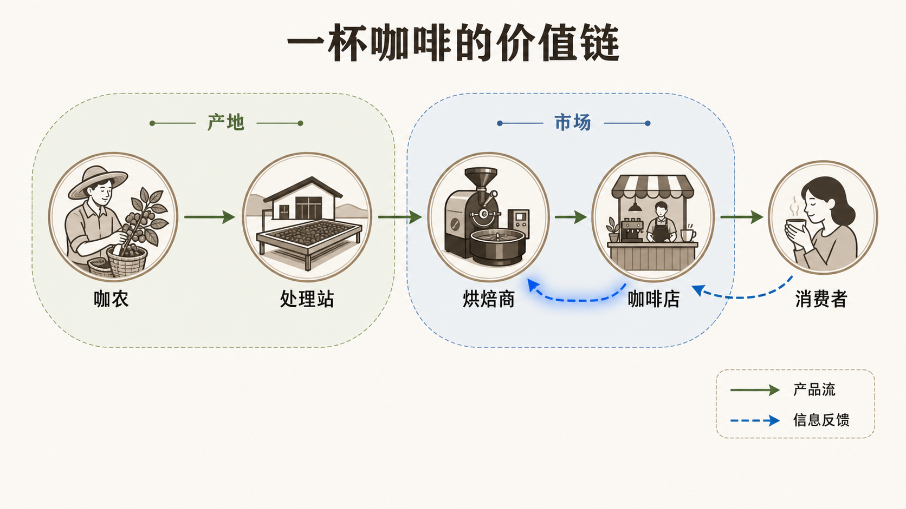
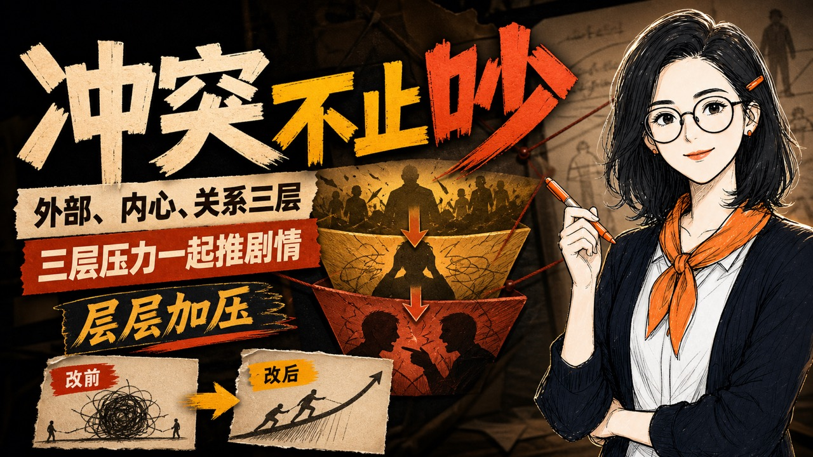
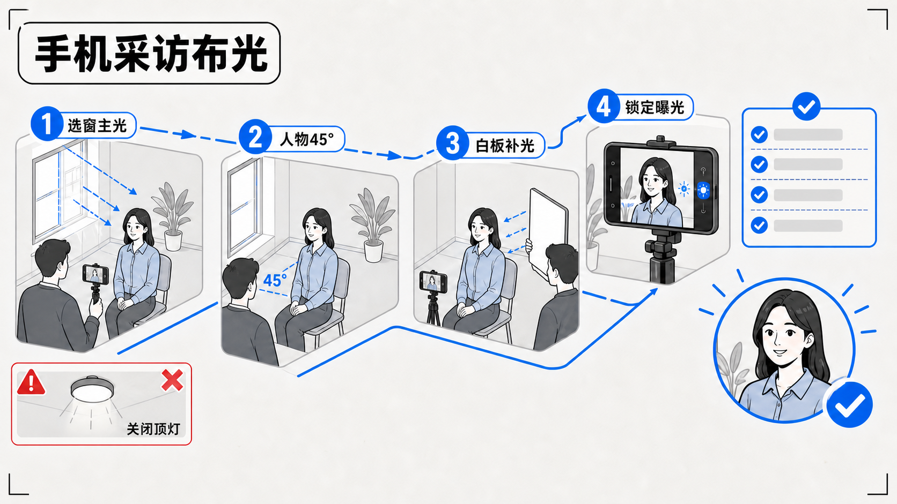

不是样式列表是语义镜头
每个动作都绑定具体内容、对象变化与一个可解释的结论。
CONTENT · 真实内容
MOTION · 对象变化
MEANING · 代表含义
EXAMPLE 01 · TRACE / ACCUMULATE / RESOLVE
六步生成一条可审片视频
这代表节点推进 = 阶段完成；每一步都有可验收产物。
TRACESTEPRESOLVE
1
输入结构化产物2
拆页结构化产物3
选模板结构化产物4
生成素材结构化产物5
逐页 QC结构化产物6
合成审片视频✓ DELIVERY PACKAGE READY视频、字幕、封面、日志与来源记录一起交付
PROJECT WORKFLOW · SEMANTIC TIMELINE
EXAMPLE 02 · TRACE / HIGHLIGHT / COMPARE
数据先交代口径，再让曲线说话
这代表曲线不是装饰：它必须显示趋势、量级、拐点与来源。
TRACECALLOUTHOLD
W1 · 4W2 · 7W3 · 11W4 · 16
+45% · 关键拐点放大原因，而不是只放大数字
DEMO DATA CONTRACT
metric: weekly_output
unit: review videos
period: W1–W4
source: replace with project sourceDEMO VALUES · SOURCE FIELD REQUIRED
EXAMPLE 03 · CONNECT / INSPECT / PRESSURE
一杯咖啡，价值如何流向消费者？
这代表真实图片提供对象；连线让供应与反馈关系被看见。
CONNECTFOCUSCONCLUDE

PROJECT-OWNED ASSET · visual-series/relationship-map.png
EXAMPLE 04 · TAP / SWITCH / COMPLETE
把工作流召唤出来
这代表输入改变状态，经过处理，最终输出才构成能力。

REAL GENERATED UI · bilingual semi-auto console
EXAMPLE 05 · COMPARE / TRANSFORM / RESOLVE
设计升级，不是换颜色
这代表安全区、证据卡与信息层级的差异必须被看见。

BEFORE · 信息被压平✓ 标题进入安全区✓ 证明对象独立成层✓ 开场承诺与正文一致
QC PASS
PROJECT COVER ASSET · deterministic comparison overlay
EXAMPLE 06 · CHOOSE / INSPECT / LOCK
让模板选择有坐标
这代表Planner 根据内容和素材条件选择风格，不是随机抽签。
语义匹配 →素材可得性 →Typed openerData curveProof boardSemantic timelineDark product UIWhiteboard
锁定：Semantic Timeline高语义匹配 · 素材齐全 · 信息密度可控 · 适合逐步解释
DETERMINISTIC ROUTING EXAMPLE · 6 EXECUTABLE CORES
EXAMPLE 07 · HANDOFF / PARALLELIZE / MERGE
职责互斥，产物合并
这代表协作流程必须看见负责人、交接点和最终验收结果。
PLANNER拆页与路由
TTS真实语音 cue
TEMPLATE DIRECTOR页面与动效
RENDERER + QC合成与验证
一页成品
+ QC
+ QC
AGENT-SIMULATION-LANE · OUTPUT BOUNDARIES VISIBLE
EXAMPLE 08 · COMPARE / SELECT / MAGNIFY
候选样张要比较结构
这代表选风格先看内容承诺与构图，再看比例和色彩。
 9:16
9:16 1:1
1:1✓ 结构完整 ✓ 信息密度合理 ✓ 开场承诺匹配 ✓ 平台安全区通过
THREE NATIVE-RATIO PROJECT COVER EXAMPLES
PERSONAL IP · TWO NATIVE PAGES
人物一致，页面逻辑继续推进
这代表不是一张人物图反复裁切，而是原生页面保持视觉 DNA。
 PAGE 01 · HOOK
PAGE 01 · HOOKGENERIC HOST · CONSISTENT PERSONA · NOT USER LIKENESS
NATIVE PERSONAL-IP PAGE SOURCES · PROVENANCE RECORDED
WHITEBOARD · 4.5 SECONDS
底图稳定，只绘制关键路径
这代表描线 → 圈节点 → 彩色回填；字幕始终在最上层。

01 · 描出主线02 · 圈出关键节点03 · 回填语义颜色
PROJECT-OWNED ASSET · LAYERED FOREGROUND ONLY
CAPTION MUSEUM · 同一张大画布68 styles · 8 semantic districts · one active narration line
68 ROUTABLE STYLES / 8 GROUPS
当前规则全景：所有样式在同一页面；镜头只聚焦当前语义组。
CATALOG SOURCE · assets/caption-style-catalog.json
内容不是塞进模板。
模板为内容服务。
模板为内容服务。